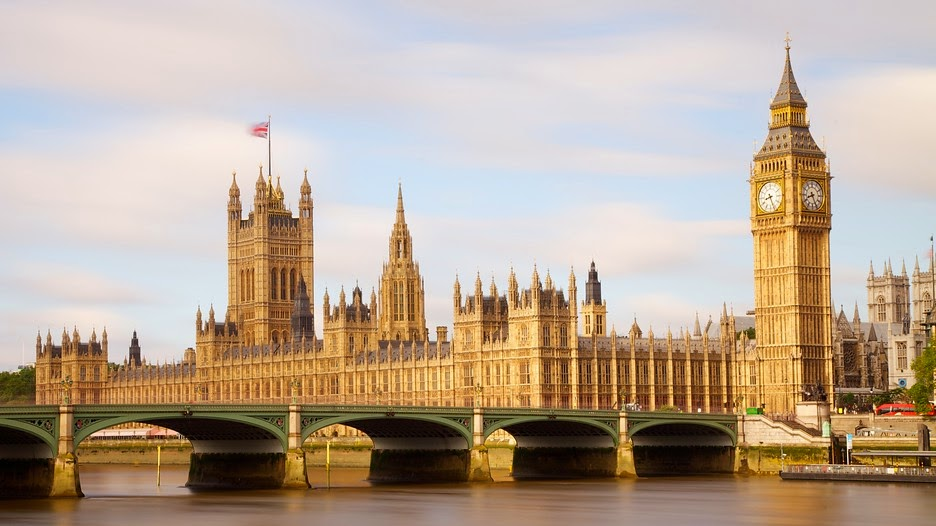
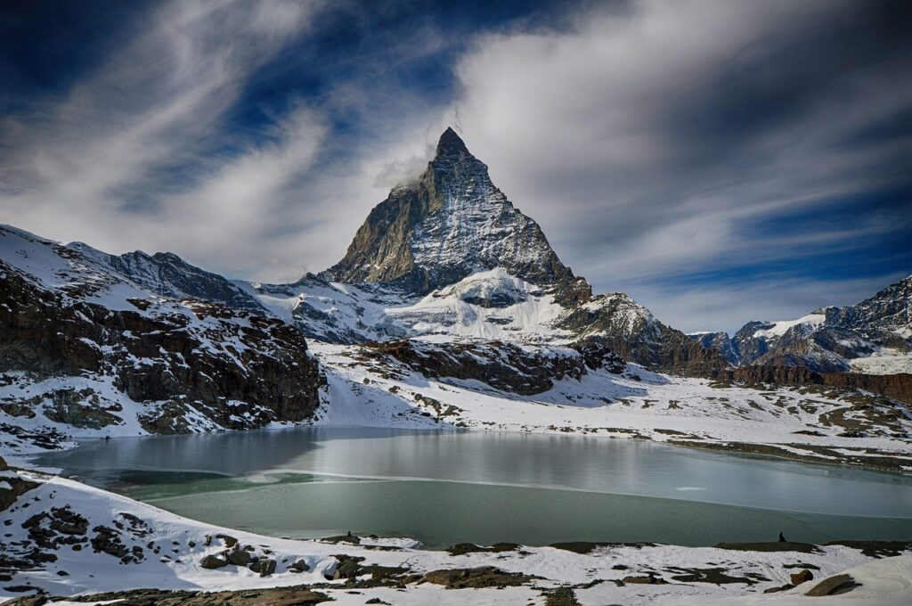
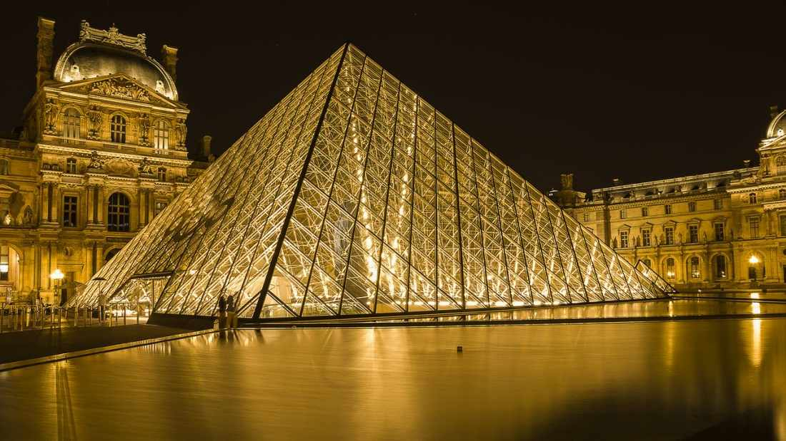
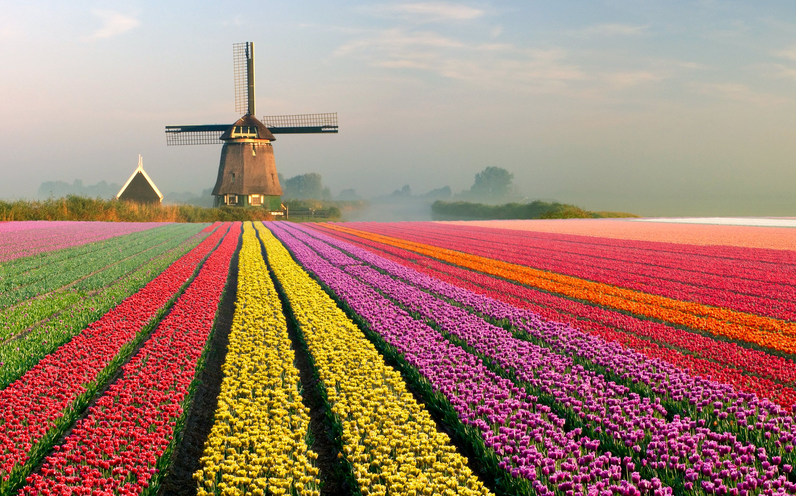

Coliseu de Roma - Itália

As lutas de gladiadores e simulações de caça com animais ferozes estão no imaginário de todos os que estudaram ou simplesmente assistiram filmes sobre o Império Romano. O Coliseu, cujo nome oficial é Anfiteatro Flaviano, começou a ser construído em 72 d.C e demorou oito anos para ficar pronto. A construção, de concreto e areia, foi comandada pelo imperador Flávio Vespasiano – homenageado pelo filho Tito, que governava Roma quando as obras acabaram.
Torre Big Ben de Londres - Inglaterra
A torre do Big Ben foi construída em 1858, ao lado do novo Palácio de Westminster, e é um dos lugares mais conhecidos e símbolo da cidade – até porque é onde está instalado o parlamento inglês hoje. Com 96 metros de altura, e uma arquitetura do estilo gótico, ela tem quatro grandes relógios (um em cada face da torre). O relógio começou a funcionar em 1859 e hoje em dia é símbolo da nação. Ele suportou os bombardeios da Segunda Guerra Mundial e resiste todas as mudanças de temperatura, inclusive neve e ventos, sempre mantendo a pontualidade. Apenas os moradores da Grã-Bretanha podem subir à torre do Big Ben, subindo a escada em caracol com mais de 300 degraus.
Zermatt - Suíça
Situada a 1.600 m acima do nível do mar, no sopé do mundialmente famoso pico Matterhorn, a cidade de Zermatt é famosa como uma das atrações mais badaladas da Suíça para resorts de férias e esportes de neve. Do esqui cross country e snowboard à patinação no gelo, não há nada que não possa ser feito sob o olhar impressionante de Matterhorn. Durante uma visita a Zermatt , a estrela do show é, sem dúvida, o Matterhorn 4.478 m de altitude. A pirâmide quase perfeita é uma das montanhas mais famosas da Europa, e só isso faz de Zermatt um dos principais pontos turísticos da Suíça e um lugar que você não pode deixar de visitar. Além disso, uma coisa importante a ser dizer é que a cidade é livre de carros. Isso significa que você só pode se locomover a pé, de eTaxi, eBus, bicicleta ou carruagem puxada por cavalos. Como não dá para ir de carro até Zermatt, para chegar lá é preciso ir de trem. Além das atividades esportivas, a rua principal oferece uma grande variedade de hotéis, butiques e restaurantes, oferecendo muito o que fazer depois de largar os esquis.
Museu do Louvre - Paris
O Museu do Louvre foi inaugurado em 1793, na capital da França, entre o rio Sena e a Rue de Rivoli. Desde então, ele recebe em média 9 milhões de visitantes todos os anos, e tornou-se um dos museus mais requisitados do mundo. Todos que visitam o Museu do Louvre em Paris se impressionam com seu acervo com mais de 380 mil objetos muito valiosos, que vão desde relíquias do antigo Egito até mesmo pinturas modernas.
Parque Keukenhof - Holanda
Criado em 1949 através de uma iniciativa do prefeito de Lisse, na época o Keukenhof surgiu como uma maneira dos produtores locais exporem suas tulipas ao público. A ideia foi tão genial que o jardim atraiu tantos visitantes que o resultado é o que vemos hoje, o maior parque de tulipas do mundo, também conhecido como o “Jardim da Europa”. O Keukenhof conta com mais de 32 hectares de flores, das quais são plantadas nos mínimos detalhes todos os anos. Cada pedacinho de terra passa por um processo minucioso que envolve planejamento, paisagismo e como tudo no país, muita organização para deixar o parque lindo e fotogênico como vemos nas fotos.